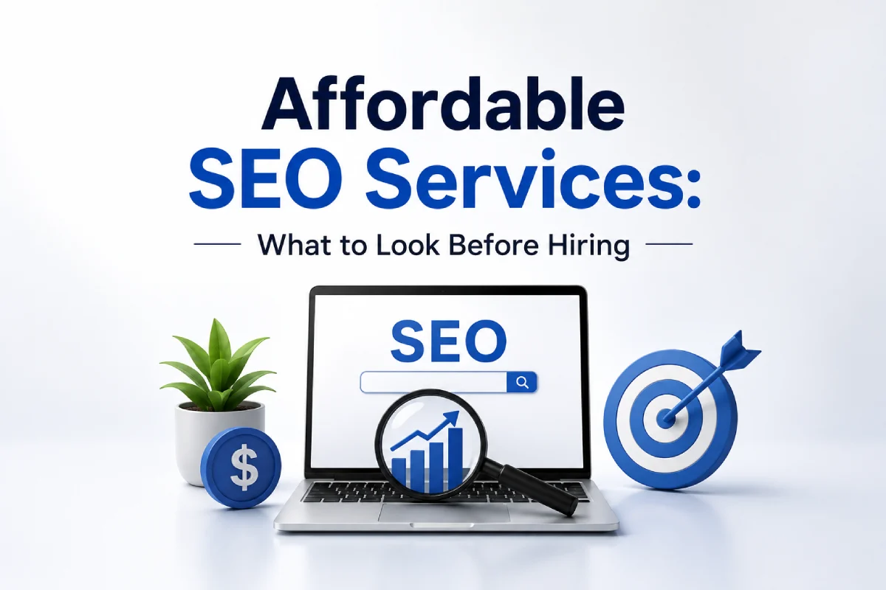

<!DOCTYPE html>
<html lang="zxx">

<head>
    <!-- Meta -->
    <meta charset="utf-8">
    <meta http-equiv="X-UA-Compatible" content="IE=edge">
    <meta name="viewport" content="width=device-width, initial-scale=1.0">
    <meta name="description"
        content="Looking for affordable SEO services? Learn the key factors to consider before hiring an SEO company and avoid costly mistakes.">
    <link rel="canonical" href="" />
    <meta name="author" content="Awaiken">
    <!-- Page Title -->
    <title>Affordable SEO Services: What to Look Before Hiring</title>
    <!-- Favicon Icon -->
    <link rel="shortcut icon" type="image/x-icon" href="images/favicon.png">
    <!-- Google Fonts Css-->
    <link rel="preconnect" href="https://fonts.googleapis.com/">
    <link rel="preconnect" href="https://fonts.gstatic.com/" crossorigin>
    <link
        href="https://fonts.googleapis.com/css2?family=Rajdhani:wght@300;400;500;600;700&amp;family=Rubik:ital,wght@0,300..900;1,300..900&amp;display=swap"
        rel="stylesheet">
    <!-- Bootstrap Css -->
    <link href="css/bootstrap.min.css" rel="stylesheet" media="screen">
    <!-- SlickNav Css -->
    <link href="css/slicknav.min.css" rel="stylesheet">
    <!-- Swiper Css -->
    <link rel="stylesheet" href="css/swiper-bundle.min.css">
    <!-- Font Awesome Icon Css-->
    <link href="css/all.min.css" rel="stylesheet" media="screen">
    <!-- Animated Css -->
    <link href="css/animate.css" rel="stylesheet">
    <!-- Magnific Popup Core Css File -->
    <link rel="stylesheet" href="css/magnific-popup.css">
    <!-- Mouse Cursor Css File -->
    <link rel="stylesheet" href="css/mousecursor.css">
    <!-- Main Custom Css -->
    <link href="css/custom.css" rel="stylesheet" media="screen">
    <!-- Google Tag Manager -->
<script>(function(w,d,s,l,i){w[l]=w[l]||[];w[l].push({'gtm.start':
new Date().getTime(),event:'gtm.js'});var f=d.getElementsByTagName(s)[0],
j=d.createElement(s),dl=l!='dataLayer'?'&l='+l:'';j.async=true;j.src=
'https://www.googletagmanager.com/gtm.js?id='+i+dl;f.parentNode.insertBefore(j,f);
})(window,document,'script','dataLayer','GTM-PNFZKBKQ');</script>
<!-- End Google Tag Manager -->
    <style>.post-entry h1 { font-size: clamp(32px, 5vw, 68px); }
.post-entry h2 { font-size: clamp(26px, 4vw, 46px); }
.post-entry h3 { font-size: clamp(22px, 3.5vw, 40px); }

<script type="application/ld+json">
{
  "@context": "https://schema.org",
  "@type": "BlogPosting",
  "mainEntityOfPage": {
    "@type": "WebPage",
    "@id": "https://searchanyoka.com/what-to-expect-from-professional-seo-services.html"
  },
  "headline": "What to Expect from a Professional SEO Service Provider",
  "description": "Learn how professional SEO services improve search rankings through technical optimization, quality content, keyword targeting, and ongoing analysis.",
  "image": {
    "@type": "ImageObject",
    "url": "https://searchanyoka.com/images/professional-seo-services-guide.webp"
  },
  "author": {
    "@type": "Organization",
    "name": "Search Anyoka",
    "url": "https://searchanyoka.com"
  },
  "publisher": {
    "@type": "Organization",
    "name": "Search Anyoka",
    "logo": {
      "@type": "ImageObject",
      "url": "https://searchanyoka.com/images/logo.png"
    }
  },
  "datePublished": "2026-06-08",
  "dateModified": "2026-06-08",
  "articleSection": "SEO",
  "keywords": [
    "professional seo services",
    "seo service provider",
    "technical seo",
    "keyword research",
    "seo content strategy",
    "search engine optimization",
    "seo audit",
    "seo consulting",
    "seo agency",
    "organic search rankings"
  ],
  "url": "https://searchanyoka.com/what-to-expect-from-professional-seo-services.html",
  "inLanguage": "en-US"
}
</script>
</head>

<body>
<!-- Google Tag Manager (noscript) -->
<noscript><iframe src="https://www.googletagmanager.com/ns.html?id=GTM-PNFZKBKQ"
height="0" width="0" style="display:none;visibility:hidden"></iframe></noscript>
<!-- End Google Tag Manager (noscript) -->
    <!-- Preloader Start -->
    <div class="preloader">
        <div class="loading-container">
            <div class="loading"></div>
            <div id="loading-icon"></div>
        </div>
    </div>
    <!-- Preloader End -->

    <!-- Header Start -->
    <header class="main-header">
        <div class="header-sticky">
            <nav class="navbar navbar-expand-lg">
                <div class="container">
                    <!-- Logo Start -->
                    <a class="navbar-brand" href="index.html">
                        
                    </a>
                    <!-- Logo End -->

                    <!-- Main Menu Start -->
                    <div class="collapse navbar-collapse main-menu">
                        <div class="nav-menu-wrapper">
                            <ul class="navbar-nav mr-auto" id="menu">
                                <li class="nav-item"><a class="nav-link" href="index.html">Home</a></li>
                                <li class="nav-item submenu"><a class="nav-link" href="services.html">Services</a>
                                    <ul>
                                        <li class="nav-item"><a class="nav-link" href="seo-services.html">SEO
                                                Services</a></li>
                                        <li class="nav-item"><a class="nav-link" href="ppc-services.html">PPC
                                                Services</a></li>
                                        <li class="nav-item"><a class="nav-link" href="packages.html">SEO + PPC
                                                Packages</a></li>
                                        <li class="nav-item"><a class="nav-link" href="free-audit.html">Free
                                                Audit</a></li>
                                    </ul>
                                </li>

                                <li class="nav-item"><a class="nav-link" href="blog.html">Blog</a></li>
                                <li class="nav-item"><a class="nav-link" href="about.html">About</a></li>
                                <li class="nav-item"><a class="nav-link" href="contact.html">Contact</a></li>
                            </ul>
                        </div>

                        <!-- Header Btn Start -->
                        <div class="header-btn">
                            <a href="free-audit.html" class="btn-default">Free Audit</a>
                        </div>
                        <!-- Header Btn End -->
                    </div>
                    <!-- Main Menu End -->
                    <div class="navbar-toggle"></div>
                </div>
            </nav>
            <div class="responsive-menu"></div>
        </div>
    </header>
    <!-- Header End -->

    <!-- Page Header Start -->
    <div class="page-header parallaxie">
        <div class="container">
            <div class="row align-items-center">
                <div class="col-lg-12">
                    <!-- Page Header Box Start -->
                    <div class="page-header-box">
                        <h1 class="text-anime-style-2" data-cursor="-opaque">Affordable SEO Services: What You Should Look for Before Hiring
</h1>
                        <div class="post-single-meta wow fadeInUp">
                            <ol class="breadcrumb">
                                <li><i class="fa-regular fa-user"></i> Admin</li>
                                <li><i class="fa-regular fa-clock"></i> 7 June, 2026</li>
                            </ol>
                        </div>
                    </div>
                    <!-- Page Header Box End -->
                </div>
            </div>
        </div>
    </div>
    <!-- Page Header End -->

    <!-- Scrolling Ticker Section Start -->
    <div class="our-scrolling-ticker subpages-scrolling-ticker">
        <!-- Scrolling Ticker Start -->
        <div class="scrolling-ticker-box">
            <div class="scrolling-content">
                <span>Local SEO Strategy</span>
                <span>Google Business Profile</span>
                <span>Accra Market Dominance</span>
                <span>Citations & Reviews</span>
                <span>Organic Growth</span>
                <span>Lead Generation</span>
                <span>Local SEO Strategy</span>
                <span>Google Business Profile</span>
                <span>Accra Market Dominance</span>
                <span>Citations & Reviews</span>
                <span>Organic Growth</span>
                <span>Lead Generation</span>
            </div>

            <div class="scrolling-content">
                <span>Local SEO Strategy</span>
                <span>Google Business Profile</span>
                <span>Accra Market Dominance</span>
                <span>Citations & Reviews</span>
                <span>Organic Growth</span>
                <span>Lead Generation</span>
                <span>Local SEO Strategy</span>
                <span>Google Business Profile</span>
                <span>Accra Market Dominance</span>
                <span>Citations & Reviews</span>
                <span>Organic Growth</span>
                <span>Lead Generation</span>
            </div>
        </div>
        <!-- Scrolling Ticker End -->
    </div>
    <!-- Scrolling Ticker Section End -->

    <!-- Page Single Post Start -->
    <div class="page-single-post">
        <div class="container">
            <div class="row">
                <div class="col-lg-12">
                    <!-- Post Featured Image Start -->
                    <div class="post-image">
                        <figure class="image-anime reveal">
                            
                        </figure>
                    </div>
                    <!-- Post Featured Image Start -->
<div class="post-content">
<!-- Post Entry Start -->
<div class="post-entry">

<h2 class="wow fadeInUp" data-wow-delay="0.5s">Introduction</h2>
<p class="wow fadeInUp">Finding SEO help is not hard. Finding good SEO help at a price that actually makes sense for your business is another story. A lot of providers promise fast results, low monthly fees, and “custom strategies,” but once you look closer, the service is often vague, recycled, or built around shortcuts that do more harm than good.</p>
<p class="wow fadeInUp">That is why affordable SEO should never mean cheap SEO. The goal is not to find the lowest price on the market. The goal is to find a service that gives you real value, fits your budget, and helps your business grow without wasting money on tactics that do not last. For small businesses, startups, and local companies in particular, that balance matters a lot.</p>
<p class="wow fadeInUp">The truth is that SEO can absolutely be affordable, but only if you know what to look for. A well-priced service should still include strategy, communication, reporting, and work that is tailored to your goals. It should help your site earn visibility, attract the right visitors, and turn that attention into leads or sales. If you want to understand why this matters for growth, see <a href="why-your-business-needs-seo-services.html" target="_blank" rel="noopener noreferrer">why your business needs SEO services</a>.</p>
<p class="wow fadeInUp">Before you hire anyone, it helps to understand how SEO pricing works, what a strong affordable service should include, and which warning signs suggest a provider is cutting corners. That way, you can make a smarter decision and avoid paying for work that looks busy but delivers little real value.</p>

<h2 class="wow fadeInUp" data-wow-delay="0.5s">Understanding SEO Pricing</h2>
<p class="wow fadeInUp">SEO pricing can vary widely because no two businesses need the same level of support. A local service business with a small website will not need the same scope of work as a national e-commerce brand with hundreds of pages. That is one reason prices range so much from one provider to another.</p>
<p class="wow fadeInUp">In many cases, pricing depends on the amount of work involved, the level of competition, and the experience of the provider. If your market is highly competitive, the SEO work usually needs to be deeper and more consistent. If your website has technical issues or weak content, the provider may need to spend more time fixing foundational problems before growth happens.</p>
<p class="wow fadeInUp">Some agencies charge monthly retainers, while others offer project-based pricing or hourly consulting. Monthly plans are common because SEO is ongoing, not one-and-done. Search rankings change, competitors adapt, and websites need regular updates, so steady work usually produces better long-term results than a single burst of effort.</p>
<p class="wow fadeInUp">It is also important to understand what you are actually paying for. A lower price may seem appealing at first, but if the provider is only doing surface-level tasks, you may not see much return. On the other hand, a slightly higher price may be worth it if the work includes strategy, content support, technical improvements, and reporting that ties everything back to business goals.</p>
<p class="wow fadeInUp">The smartest way to think about SEO pricing is not “How little can I spend?” but “What kind of return can I expect from this investment?” That shift in mindset helps you evaluate value more clearly.</p>

<h2 class="wow fadeInUp" data-wow-delay="0.5s">Features of Quality Affordable SEO Services</h2>
<p class="wow fadeInUp">Affordable SEO services can still be effective if they are built on the right foundation. The key is knowing what real value looks like. A good provider should not just promise rankings. They should offer a process that helps your website become more visible, more useful, and more competitive over time.</p>
<p class="wow fadeInUp">One of the first things to look for is a clear strategy. A strong SEO service should begin with understanding your business, your audience, your competitors, and your goals. The provider should explain how they plan to improve your visibility and what success will look like. If there is no strategy, the work is probably too generic to be useful. For a clearer idea of what structured service looks like, visit <a href="what-to-expect-from-professional-seo-services.html" target="_blank" rel="noopener noreferrer">what to expect from professional SEO services</a>.</p>
<p class="wow fadeInUp">Another important feature is keyword research. Good SEO is not about stuffing pages with random terms. It is about finding the searches your customers are actually using and matching those searches to the right pages. Even an affordable service should include keyword planning that focuses on intent, not just volume.</p>
<p class="wow fadeInUp">Content support is also important. If your pages are thin, unclear, or poorly structured, you will have a hard time competing in search. A quality SEO service should help improve existing pages, build out important service content, and support blog or resource creation when needed. The writing should sound natural, not forced.</p>
<p class="wow fadeInUp">Technical SEO should be part of the package too. A provider does not need to rebuild your entire website, but they should be able to identify issues like slow load speed, broken links, indexing problems, mobile usability issues, or weak site structure. These problems can quietly limit performance if they are ignored.</p>
<p class="wow fadeInUp">Reporting is another sign of a good service. You should know what is being done, what is improving, and what still needs attention. The reports do not need to be complicated, but they should be honest and useful. You want to see progress tied to rankings, traffic, leads, or other business outcomes.</p>
<p class="wow fadeInUp">Finally, communication matters more than many people realize. A provider offering affordable SEO should still be responsive, clear, and transparent. You should understand what is happening without needing to decode technical jargon every time you ask a question. Good communication makes the whole process easier to trust.</p>

<h2 class="wow fadeInUp" data-wow-delay="0.5s">Questions to Ask Before Hiring</h2>
<p class="wow fadeInUp">Before signing with any SEO provider, it helps to ask a few direct questions. The answers will tell you a lot about whether the service is worth the price.</p>
<p class="wow fadeInUp">Start by asking what is included in the monthly fee. Some providers advertise low prices but leave out key tasks that actually matter, such as content optimization, technical work, or reporting. You want to know exactly what you are getting so there are no surprises later.</p>
<p class="wow fadeInUp">Ask how they approach keyword research. A good provider should be able to explain how they choose keywords, how they match those terms to search intent, and how they decide which pages to optimize first. If they only talk about rankings in general terms, that is not enough.</p>
<p class="wow fadeInUp">You should also ask how they measure success. If the answer is only “more traffic,” that is a red flag. Traffic matters, but it is not the full picture. You want to know whether they track leads, conversions, calls, form submissions, or sales depending on your business model. If lead generation is a priority, it helps to review <a href="how-seo-services-help-small-businesses-get-more-leads.html" target="_blank" rel="noopener noreferrer">how SEO services help small businesses get more leads</a>.</p>
<p class="wow fadeInUp">Another useful question is how they handle reporting. Will you get a monthly summary? Will they explain the work completed? Will they tell you what is improving and what still needs attention? A provider that avoids reporting details may not be managing the work as carefully as they should.</p>
<p class="wow fadeInUp">It is also smart to ask for examples of past results. You do not need a long portfolio filled with big-name clients, but the provider should be able to share examples of the kind of work they have done and the outcomes they helped produce. Real experience matters more than polished sales language.</p>
<p class="wow fadeInUp">Finally, ask who will actually do the work. Some agencies sell the service but outsource everything without much oversight. That is not always a problem, but you should know who is responsible and how the work is managed. Clarity here can save you a lot of frustration later.</p>

<h2 class="wow fadeInUp" data-wow-delay="0.5s">Warning Signs of Cheap SEO</h2>
<p class="wow fadeInUp">Cheap SEO often looks attractive at first because the price seems easy to justify. But very low-cost services can come with hidden problems. If a provider is promising a lot for very little, you should pay close attention to how they describe their work.</p>
<p class="wow fadeInUp">One of the biggest warning signs is guaranteed rankings. No honest SEO provider can promise a specific ranking position in a fixed amount of time. Search results are influenced by competition, algorithm changes, site quality, and many other factors. A guarantee like that usually means the provider is overselling or using risky tactics. If you are unsure how to spot these issues, check <a href="10-clear-signs-you-need-professional-seo-services.html" target="_blank" rel="noopener noreferrer">10 clear signs you need professional SEO services</a>.</p>
<p class="wow fadeInUp">Another warning sign is vague deliverables. If the service description says things like “SEO optimization,” “traffic growth,” or “monthly work” without explaining what will actually be done, that is a problem. You should know whether the provider is creating content, fixing technical issues, optimizing pages, building links, or doing something else entirely.</p>
<p class="wow fadeInUp">Be careful with providers who focus only on backlinks. Links matter, but they are only one piece of SEO. A service that ignores content, site structure, and technical health is not offering a complete strategy. In some cases, that kind of narrow approach can even create risk if the links are low quality.</p>
<p class="wow fadeInUp">Mass-produced content is another red flag. If the provider is turning out generic articles that feel repetitive or artificial, they may not be helping your site stand out. Search engines and users both respond better to content that feels useful and original. Cheap content often saves money up front but costs more in the long run.</p>
<p class="wow fadeInUp">You should also watch for poor communication. If a provider takes days to answer simple questions, avoids specifics, or seems unwilling to explain their methods, that is worth noticing. SEO takes time, but the process should still feel transparent.</p>

<h2 class="wow fadeInUp" data-wow-delay="0.5s">Comparing SEO Packages</h2>
<p class="wow fadeInUp">When comparing SEO packages, it is easy to get distracted by price alone. But package comparison should go deeper than the monthly number. A lower-cost plan may include very little actual work, while a slightly higher one may be much more useful for your business.</p>
<p class="wow fadeInUp">Look first at the scope of services. Does the package include keyword research, on-page optimization, technical review, content help, reporting, and link building? Or does it mainly consist of a few basic tasks each month? The more clearly the package matches your business needs, the more useful it is likely to be. You can see how a structured offer is typically presented on a <a href="packages.html" target="_blank" rel="noopener noreferrer">packages</a> page.</p>
<p class="wow fadeInUp">You should also look at how much of the work is customized. A strong package should not be identical for every client. Your industry, market, website size, and goals all affect what SEO should look like. If the package feels completely standardized, it may not be designed to support your specific situation.</p>
<p class="wow fadeInUp">It is also helpful to compare the level of ongoing support. Some SEO plans include strategy calls, performance reviews, and regular updates. Others are much more passive and rely on very little interaction. If you value guidance and accountability, that difference matters.</p>
<p class="wow fadeInUp">Another thing to compare is how the provider handles content. Some packages include blog writing, service page updates, or landing page support. Others leave content entirely to the client. If content is a weakness on your site, a package with content support may offer much better value.</p>
<p class="wow fadeInUp">The cheapest option is not always the most affordable in practice. If a low-cost package produces no meaningful results, it is really expensive in disguise. A better package that drives leads or sales can actually be the more affordable choice because it creates return.</p>

<h2 class="wow fadeInUp" data-wow-delay="0.5s">Measuring Value Beyond Cost</h2>
<p class="wow fadeInUp">When people shop for SEO, they often look at price first. That is understandable, especially for small businesses working with limited budgets. But cost alone does not tell you whether a service is worth it. What matters more is the value it creates.</p>
<p class="wow fadeInUp">A useful way to judge value is by asking what the SEO work could realistically produce. If a service helps improve rankings for high-intent keywords, increases qualified traffic, and generates more leads, then even a moderate monthly fee may be a smart investment. On the other hand, a cheap service that produces no real business impact is not actually affordable.</p>
<p class="wow fadeInUp">It also helps to think long term. Good SEO compounds over time. A page optimized today can keep bringing traffic months from now. A local search improvement can keep generating calls well after the initial work is done. That kind of ongoing value is hard to measure only by monthly cost.</p>
<p class="wow fadeInUp">You should also consider the cost of doing nothing. If your competitors are improving their SEO while your business stays still, the gap can widen quickly. Missing out on traffic, leads, and visibility can cost far more than a solid SEO investment. In that sense, the real question is not whether SEO costs money, but whether not investing costs more.</p>
<p class="wow fadeInUp">Value also comes from expertise. A capable SEO provider can save you time, prevent mistakes, and focus your efforts on what matters most. That efficiency has value too, especially if your team is already stretched thin. In many cases, the right provider is not the cheapest one, but the one who helps you avoid wasted effort.</p>
<p class="wow fadeInUp">For businesses that serve a specific area, local visibility can increase that return even further. That is one reason many companies invest in <a href="local-seo-services-dominate-search-results-in-your-area.html" target="_blank" rel="noopener noreferrer">local SEO services</a> alongside broader search work.</p>

<h2 class="wow fadeInUp" data-wow-delay="0.5s">Conclusion</h2>
<p class="wow fadeInUp">Affordable SEO services can be a smart investment, but only if you choose carefully. The best providers offer more than a low monthly price. They bring strategy, keyword research, content support, technical improvements, reporting, and clear communication to the table.</p>
<p class="wow fadeInUp">The main lesson is simple: do not confuse cheap with affordable. Cheap SEO often cuts corners, uses risky shortcuts, or delivers very little value. Affordable SEO should still be thoughtful, tailored, and connected to your business goals. It should help your site grow in a way that makes sense over time.</p>
<p class="wow fadeInUp">Before hiring, ask clear questions, compare package details, and pay attention to warning signs. Look for a provider who understands your market, explains their process, and focuses on results that matter. When you find that balance between price and quality, SEO becomes not just affordable, but worthwhile. For a broader comparison of service quality, see <a href="what-to-expect-from-professional-seo-services.html" target="_blank" rel="noopener noreferrer">what to expect from professional SEO services</a>.</p>
<p class="wow fadeInUp">If your business is considering a new SEO partner, a <a href="free-audit.html" target="_blank" rel="noopener noreferrer">free audit</a> can be a practical starting point. It can help you understand what needs work before you commit to a plan, and it gives you a clearer way to compare providers.</p>

</div>
</div>


<!-- Post Single Content End -->
                        </div>
                        <!-- Post Entry End -->

                        <!-- Post Tag Links Start -->
                        <div class="post-tag-links">
                            <div class="row align-items-center">
                                <div class="col-lg-8">
                                    <!-- Post Tags Start -->
                                    <div class="post-tags wow fadeInUp" data-wow-delay="0.5s">
                                        <span class="tag-links">
                                            Tags:
                                            <a href="#">Local SEO</a>
                                            <a href="#">Marketing Ghana</a>
                                            <a href="#">Google Business</a>
                                        </span>
                                    </div>
                                    <!-- Post Tags End -->
                                </div>

                                <div class="col-lg-4">
                                    <!-- Post Social Links Start -->
                                    <div class="post-social-sharing wow fadeInUp" data-wow-delay="0.5s">
                                        <ul>
                                                                             <li>
  <a href="https://www.facebook.com/profile.php?id=61582041947229" target="_blank" rel="noopener noreferrer">
    <i class="fa-brands fa-facebook-f"></i>
  </a>
</li>                                        <li>
  <a href="https://www.linkedin.com/company/search-anyoka/" target="_blank" rel="noopener noreferrer">
    <i class="fa-brands fa-linkedin-in"></i>
  </a>
                                        </l>
                                            <li><a href="#"><i class="fa-brands fa-instagram"></i></a></li>
                                            <li><a href="#"><i class="fa-brands fa-x-twitter"></i></a></li>
                                        </ul>
                                    </div>
                                    <!-- Post Social Links End -->
                                </div>
                            </div>
                        </div>
                        <!-- Post Tag Links End -->
                    </div>
                    <!-- Post Single Content End -->
                </div>
            </div>
        </div>
    </div>
    <!-- Page Single Post End -->

    <!-- Footer Main Start -->
        <footer class="footer-main light-section">
            <div class="container">
                <div class="row">
                    <div class="col-lg-3">
                        <!-- About Footer start -->
                        <div class="about-footer">
                            <!-- Footer Logo Start -->
                            <div class="footer-logo">
                                
                            </div>
                            <!-- Footer Logo End -->

                            <!-- Footer Contact Box Start -->
                            <div class="about-footer-content">
                                <p>Get Found. Get Clicks. Get Customers. Your growth journey starts today!</p>
                            </div>
                            <!-- Footer Contact Box End -->

                            <!-- Footer Newsletters Form Start -->
                            <div class="footer-newsletters-form">
                                <form id="newslettersForm" action="#" method="POST">
                                    <div class="form-group">
                                        <input type="email" name="mail" class="form-control" id="mail"
                                            placeholder="Enter your email" required>
                                        <button type="submit"></button>
                                    </div>
                                </form>
                            </div>
                            <!-- Footer Newsletters Form End -->
                        </div>
                        <!-- About Footer End -->
                    </div>

                    <div class="col-lg-3 col-md-6">
                        <!-- Footer Links Start -->
                        <div class="footer-links">
                            <h3>contact us</h3>

                            <!-- Footer Contact Item Start -->
                            <div class="footer-contact-item">
                                <div class="icon-box">
                                    
                                </div>
                                <div class="footer-contact-content">
                                    <p><a href="tel:+233242359492">+233 24 235 9492</a></p>
                                </div>
                            </div>
                            <!-- Footer Contact Item End -->

                            <!-- Footer Contact Item Start -->
                            <div class="footer-contact-item">
                                <div class="icon-box">
                                    
                                </div>
                                <div class="footer-contact-content">
                                    <p><a href="mailto:info@searchanyoka.com">info@searchanyoka.com</a></p>
                                </div>
                            </div>
                            <!-- Footer Contact Item End -->
                        </div>
                        <!-- Footer Links End -->
                    </div>

                    <div class="col-lg-3 col-md-6">
                        <!-- Footer Links start -->
                        <div class="footer-links">
                            <h3>Quick Links</h3>
                            <ul>
                                <li><a href="about.html">About Us</a></li>
                                <li><a href="blog.html">Blog</a></li>
                                <li><a href="contact.html">Contact Us</a></li>
                             
                            </ul>
                        </div>
                        <!-- Footer Links end -->
                    </div>

                    <div class="col-lg-3 col-md-12">
                        <!-- Footer Links start -->
                        <div class="footer-links">
                            <h3>our location</h3>
                            <ul>
                                <li>Accra, Ghana</li>
                            </ul>
                        </div>
                        <!-- Footer Links end -->
                    </div>

                    <div class="col-lg-12">
                        <!-- Footer Copyright Section Start -->
                        <div class="footer-copyright">
                            <!-- Footer Copyright Start -->
                            <div class="footer-copyright-text">
                                <p>Copyright © 2026 Search Anyoka. All Rights Reserved.</p><a
                                    style="color:aquamarine; text-shadow: 2px 2px 4px rgba(0,0,0,0.8), -1px -1px 0 #000, 1px -1px 0 #000, -1px 1px 0 #000, 1px 1px 0 #000;"></a>
                                
                            </div>
                            <!-- Footer Copyright End -->

                            <!-- Footer Social Link Start -->
                            <div class="footer-social-links">
                                <ul>
                                    <li><a href="#"><i class="fa-brands fa-instagram"></i></a></li>
                                  <li>
  <a href="https://www.facebook.com/profile.php?id=61582041947229" target="_blank" rel="noopener noreferrer">
    <i class="fa-brands fa-facebook-f"></i>
  </a>
</li>
                                    <li><a href="#"><i class="fa-brands fa-dribbble"></i></a></li>
                                </ul>
                            </div>
                            <!-- Footer Social Link End -->
                        </div>
                        <!-- Footer Copyright Section End -->
                    </div>
                </div>
            </div>
        </footer>
        <!-- Footer Main End -->

    <!-- Jquery Library File -->
    <script src="js/jquery-3.7.1.min.js"></script>
    <!-- Bootstrap js file -->
    <script src="js/bootstrap.min.js"></script>
    <!-- Validator js file -->
    <script src="js/validator.min.js"></script>
    <!-- SlickNav js file -->
    <script src="js/jquery.slicknav.js"></script>
    <!-- Swiper js file -->
    <script src="js/swiper-bundle.min.js"></script>
    <!-- Counter js file -->
    <script src="js/jquery.waypoints.min.js"></script>
    <script src="js/jquery.counterup.min.js"></script>
    <!-- Magnific js file -->
    <script src="js/jquery.magnific-popup.min.js"></script>
    <!-- SmoothScroll -->
    <script src="js/SmoothScroll.js"></script>
    <!-- Parallax js -->
    <script src="js/parallaxie.js"></script>
    <!-- MagicCursor js file -->
    <script src="js/gsap.min.js"></script>
    <script src="js/magiccursor.js"></script>
    <!-- Text Effect js file -->
    <script src="js/SplitText.js"></script>
    <script src="js/ScrollTrigger.min.js"></script>
    <!-- YTPlayer js File -->
    <script src="js/jquery.mb.YTPlayer.min.js"></script>
    <!-- Wow js file -->
    <script src="js/wow.min.js"></script>
    <!-- Main Custom js file -->
    <script src="js/function.js"></script>

 <script>
document.querySelectorAll('.faq-question').forEach((item) => {
  item.addEventListener('click', () => {
    const parent = item.parentElement;

    // Close all other FAQs (optional)
    document.querySelectorAll('.faq-item').forEach((faq) => {
      if (faq !== parent) {
        faq.classList.remove('active');
      }
    });

    // Toggle current
    parent.classList.toggle('active');
  });
});
</script>
</body>

</html>
